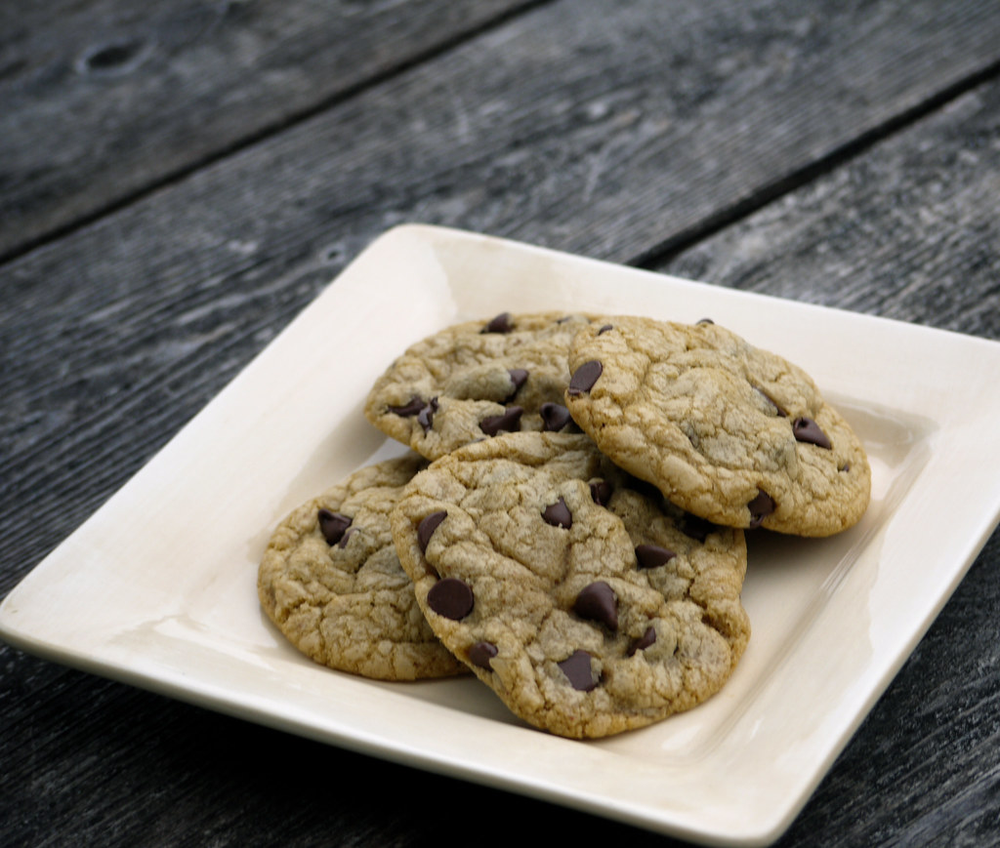

Home
Chocolate Chip Cookies

Ingredients:
- 6 tablespoons of butter
- 1 cup of all purpose flour
- 1/4 teaspoon of baking soda
- 1/4 teaspoon of salt
- 1/2 cup of brown sugar, packed
- 1/4 cup of white sugar
- 1 large egg
- 1/2 tablespoon of vanilla extract
- 1 cup of semisweet chocolate chips
Steps:
- In a sauce pan, melt the butter at whichever heat you choose (low or high), just keep an eye on it till its golden brown then let it cool for about 5 mins and add it to a stand mixer with the paddle attachment.
- Turn the mixer on low and add the sugar (brown and white), then let it mix till it has a uniform look.
- Add the egg and vanilla extract to the mixer and let it go till it is thourghly mixed together to create our 'Wet' mixture.
- In another bowl, whisk together the 'Dry' ingredients (flour, baking soda, salt) then add the 'Dry' mixture to the 'Wet' mixture in three chunks to help it be fulling incorperated with the 'Wet' mixture.
- Add the chocolate chips to the mixer little by little untill the chips are mixed in the dough.
- Take the cookie dough and put plastic over it and put in the fridge for a couple hours. When it's almost time to pull them out, preheat the oven at 350F and spray down a sheet tray with oil.
- Pull the cookie dough out of the fridge and scoop dough out and place on tray with enough space between them. Toss in oven for about 13 - 15 minutes or untill golden brown on the edges. Let them cool and enjoy.